Data Analysis using IBM SPSS Statistics
Slot 2 Web Notes
PROFILING THE RESPONDENTS
1. DESCRIPTIVE ANALYSIS
PURPOSE:
- Describe the distribution of the variable of interest.
TECHNIQUES:
- Frequencies and Cross-tabulations for Nominal or Categorical Variables
- Means and Means by sub-groups for Continuous Data
WHEN DO WE USE THEM IN THE RESEARCH?
- Describing the Sample Profile
- Issue of Representativeness – Response Rate versus Non-Response Bias
a. Response Rates
In any report the first thing that is normally reported is the response rates. In any typical mail survey we should always remember that to get a response rate of 100% is nearly impossible. In the Malaysia context the response rates for mail survey is usually 10-20% only.
Table 1
Response rate
| Number/Frequency | |
|---|---|
| Number of Questionnaires distributed | 500 |
| Number of questionnaire returned | 120 |
| Response rate | 24% |
| Number of usable questionnaire | 98 |
| Effective Response rate | 19.6% |
There is a difference between response rate and effective response rate. The response rate is equal to the number of questionnaires received divided by the number of questionnaires sent out. The effective response rate on the other hand is equal to the number of usable questionnaire divided by the total number sent out.
Why is this necessary?
When the response rate is low it raises question about the representativeness of the sample. We might have say a majority of small sized companies but our research objectives says that we would like to study small and medium sized enterprises. This by itself points to some sort of bias which needs to be highlighted later in the limitations of the study.
Another reason is the problem of non response. Would the responses of those who have not responded be different form those who responded? This can only be tested if we know the profile of the companies that have not responded or else this would be impossible to do. We can also justify this by doing a “wave analysis” as suggested by Armstrong and Overton (1977), which will be discussed later.
According to Harbaugh (2002, p. 70). “Response rates for traditional mail surveys have continued to decline to a point where the average is below 20%.” The response rate of 19.6% matches the usual response rate of 10-20% using the same method in Malaysia. As the respondents for this study are key persons in the organization, they are known to be less likely to respond to mailed questionnaires than people in the general population (Hunt & Chonko 1987).
References
Harbaugh, R. (2002), “Proven lessons for generating good mail survey response rates”, Medical Marketing and Media, Vol 37 No 10, pp. 70-75.
Hunt, S.D. and Chonko, L.B. (1987), “Ethical Problems of Advertising Agency Executives”, Journal of Advertising, Vol. 53 No 1, pp. 16-24.
Armstrong, S. and Overton, T.S. (1977), “Estimating Nonresponse Bias in Mail Surveys”, Journal of Marketing Research, Vol 14, pp. 396-402.
b. Who are our respondents?
In any report typically there will be a description of the profile of respondents. This is done to highlight that the profile suits the purpose of the study and also if it does not it can be used later to justify the non significance of some research hypotheses.
To do this we will ask for the frequency distribution of the nominal variables that we included in the profile section of our questionnaire.
Analyze --> Descriptive Statistics --> Frequencies
If we have 10 nominal variables we will be getting 10 different tables like the ones above. We can also charts like the bar chart or the pie char as above. You do not need both in the report. The idea is that for academic report normally tables are used whereas for business presentation charts are more suitable. Kindly refrain from “cut and paste” syndrome. You will need to draw a frequency table like the one below.
Table 2
Profile of Respondents
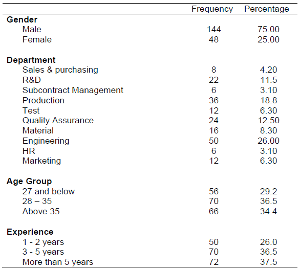
Table 2 summarizes the demographic profile of the respondents. In terms of respondents, almost 75% were male and they came from various departments although a bigger majority was from the Engineering department. Thus, we can conclude that the respondents are sufficiently well versed with the company and able to comprehend the needs of the questionnaire.
Do not repeat the information contained in the Table 2. For example, “There are 75% male whilst the remaining 25% were female”. This statement does not bring to bear any new information, not already contained in the Table, thus translating it into prose form is futile.
When writing the description, pick the pattern that is supporting the arguments that your sample is appropriate to the subject of the study and that the data are obtained from credible sources.
The whole idea of having the sample profile is to ensure that data thus obtained from the sample you obtained, is credible and therefore provide useful basis for the subsequent analysis and inference.
- Frequency Analysis
- All nominal variables are profiled in a table to show the profile of the respondents or responding companies.
Who are our respondents?
- Descriptive analysis
Histogram
Mean and Standard deviation
Skewness and Kurtosis
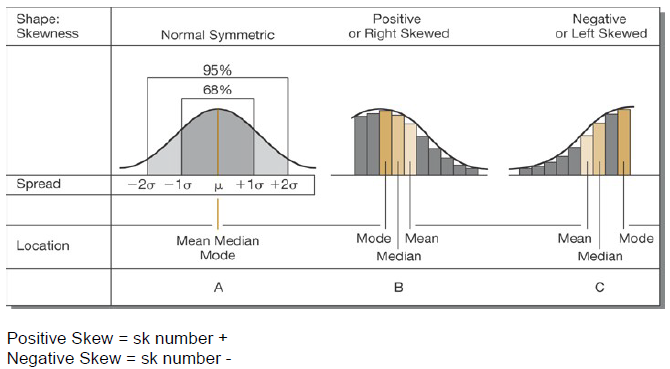
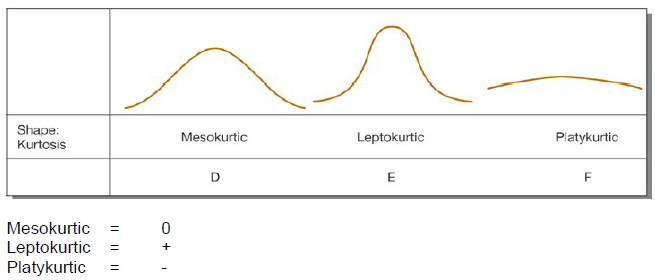
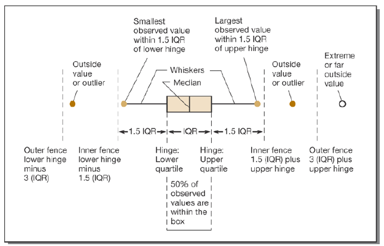
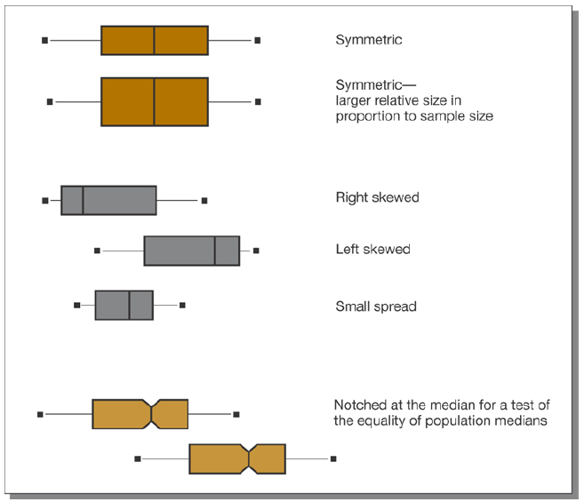
Exercise 1:
Complete the table with the other demographic profile characteristics of the respondents.
Question:
Is our sample representative?
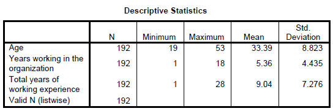
We must also remember that not all demographic variables are nominal in nature. For example in our questionnaire, age, organizational tenure and work tenure were actual number of years not in terms of interval classes as such a frequency analysis would be futile.
We would ask for a descriptive analysis where the mean and standard deviation of the variables would be noted. The proper table is presented below.
Table 3
Descriptive profile of respondents
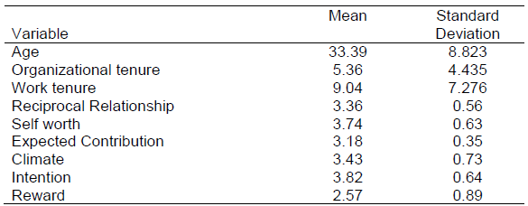
c. What is the Current State of Affair for the Variables of Interest?
- What is the current level of the variables of interest?
TYPICAL QUESTIONS
- What is the level of intention to share information in the organization?
- What is the level of actual sharing in the organization?
To do this we will ask for the descriptive analysis of the continuous variables that we computed from our questionnaire.
Analyze --> Descriptive Statistics --> Descriptives
SPSS Output
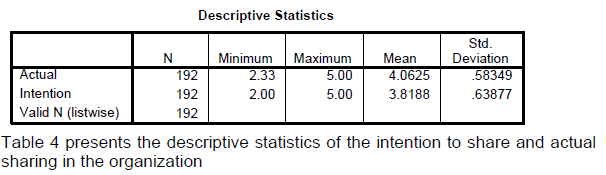
In Report APA Style
Table 4
Descriptive statistics of the intention to share and actual sharing in the organization
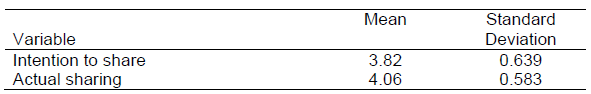
Exercise 2:
Complete the table with the other main variables of the study and a short description of each variable.
d. \(\chi^2\) Test (Crosstabulation)
Chi Square tests can be divided into 2 types:
- Test for independence
- This test is used when you wish to explore the relationship between 2 categorical variables with each having 2 or more categories
- Example “Is the proportion of male employees with high intention to share information the same as the proportion of female with high intention to share information?”
- Gender has (1= Male/2=Female) whereas Level we have (1=Low/2=High)
- We will have a (2 X 2) contingency table
- Goodness of Fit
- This test is used to see if a given distribution follows a theoretical distribution say a normal, binomial or whatever distribution.
To use the test for independence we will ask for the descriptive analysis and then select crosstabs and use the variables gender and position in the analysis.
Analyze --> Descriptive Statistics --> Crosstabs
SPSS Output
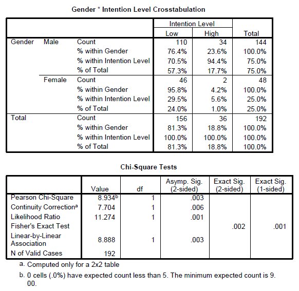
The Continuity Correction value represents the Yates Correction for Continuity, this value is designed to correct or compensate for what some writers feel is an overestimate of the chi-square value when used with a 2 X 2 table. (Pallant, 2001)
Reference
Pallant, J. (2001). SPSS Survival Manual: A step by step guide to data analysis using SPSS for Windows (Version 10), NSW, Australia: Allen & Unwin.
In Report APA Style
Table 5
Percentage Distribution of Low and High Intention to share Information
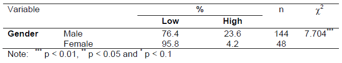
Exercise 3:
Test whether the level of intention to share is independent of department, position and education level.
e. Problem of Non-Response Bias
Non response Bias is a test to determine whether responses of those who have not responded are different from those who responded? This can only be tested if we know the profile of the companies that have not responded or else this would be impossible to do. We can also justify this by doing a “wave analysis” as suggested by Armstrong and Overton (1977), which will be discussed later.
As suggested by Zou et al. (1997), owing to the lack of comparable data from the non-responding firms, direct comparison of the responding and non-responding firms was not possible. We used the wave analysis method with the Student’s t-test as the next best approach to compare between the early and late replies (replies received after the follow up contacts) as suggested by Armstrong and Overton (1977). The wave analysis method assumes that those who respond less readily are more like non-respondents. (Zou et al., 1997). They suggested using the t-test procedure under the assumptions of both equal and unequal group variances. In the t-test analysis, we found no between-group mean differences at the 5% level for any of the variables in the study. Thus, it may be concluded that non-response bias was not of particular influence in this research. (Skarmeas et al., 2002).
References
Harbaugh, R. (2002), “Proven lessons for generating good mail survey response rates”, Medical Marketing and Media, Vol 37 No 10, pp. 70-75.
Hunt, S.D. and Chonko, L.B. (1987), “Ethical Problems of Advertising Agency Executives”, Journal of Advertising, Vol. 53 No 1, pp. 16-24.
Armstrong, S. and Overton, T.S. (1977), “Estimating Nonresponse Bias in Mail Surveys”, Journal of Marketing Research, Vol 14, pp. 396-402.
Skarmeas, D., Katsikeas, C.K. and Schlegelmilch, B. (2002), “Drivers of commitment and its impact on performance in cross-cultural buyerseller relationships: the importer’s perspective”, Journal of International Business Studies, Vol. 33 No. 4, pp. 757-83.
Zou, S., Andrus, D.M. and Norvell, D.W. (1997), “Standardization of international marketing strategy by firms from a developing country”, International Marketing Review, Vol. 14 No 2, pp. 107-123.
During the data collection stage we have to note the early and late responses by using some criteria. Normally we will allow say about 2 months as cut off date for returns after the first posting and then when we send reminders; all the subsequent returns will be classified as late returns. We usually code them say 1=Early and 2=Late. So we have created another new nominal variable called response.
Some researchers also do the postings using waves, ie; first wave and second wave. If that is the case then we have to also test the returns of the first wave with those of the second wave.
SPSS Outputs
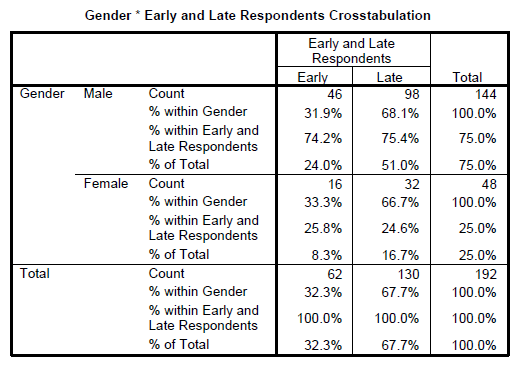
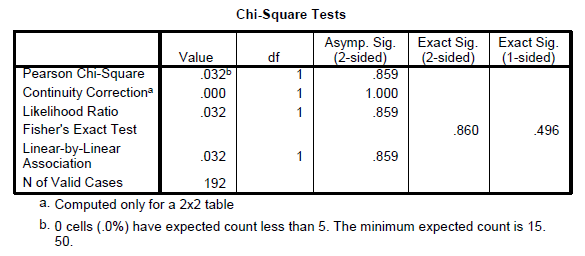
In Report APA Style
Table 6
Chi Square test for Early versus Late responses
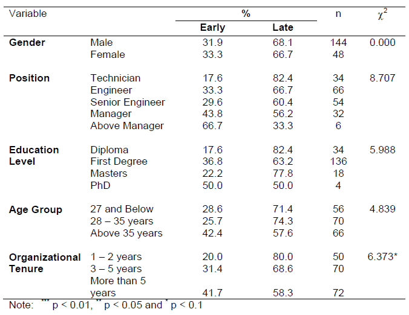
Exercise 4:
Test whether the there are any non-response bias for the other demographic variables of department, position and education level.
f. Goodness of Fit Test
The second test that uses the Chi Square is the goodness of fit test. This test is done to ascertain if the sample follows a pre-specified distribution. Let’s say we would to test whether the gender follows a Chi square distribution proportion of 50%.
Analyze --> Nonparametric Test --> Chi-Square
The null hypothesis states that the sample follows a Chi Square distributionwith p = 0.5 whereas the alternate says it does not follow this distribution.
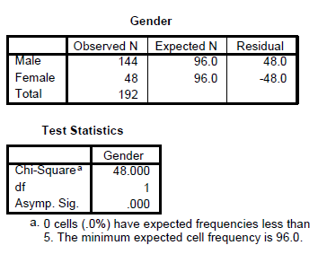